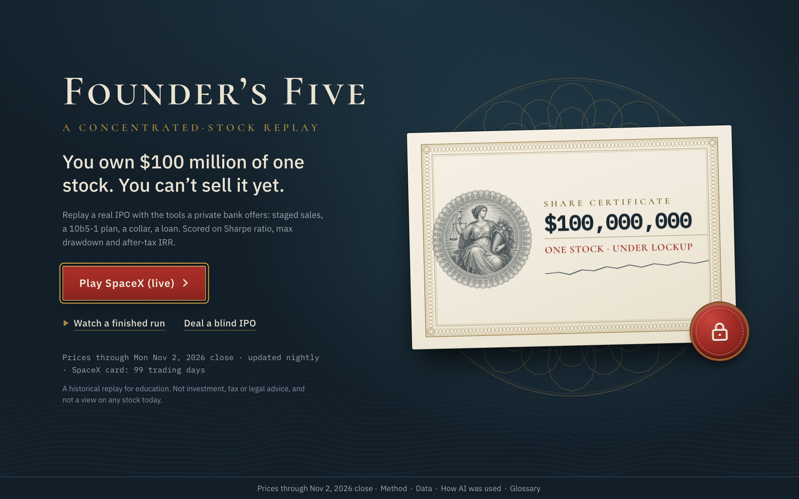
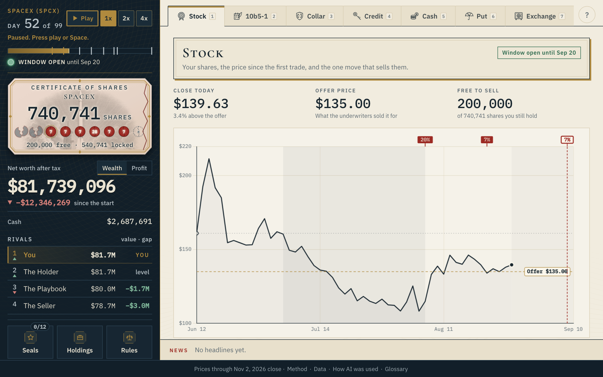
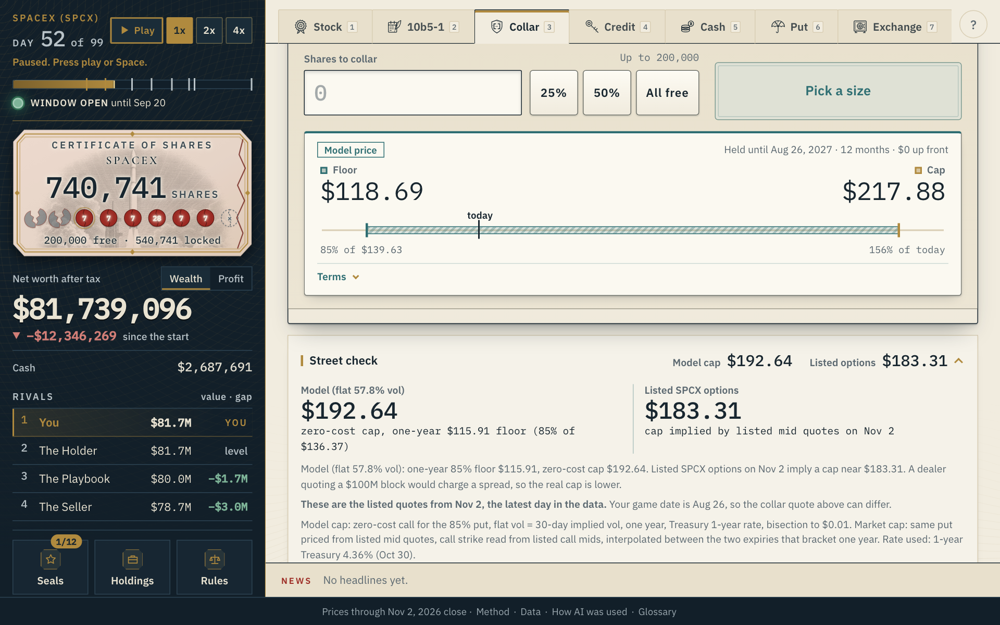
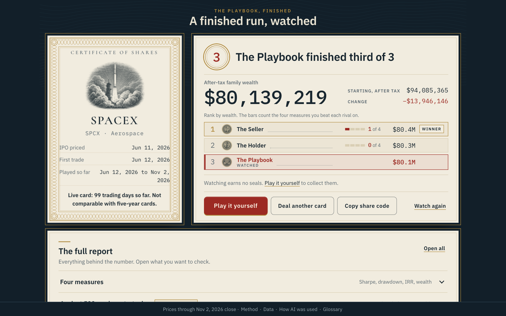
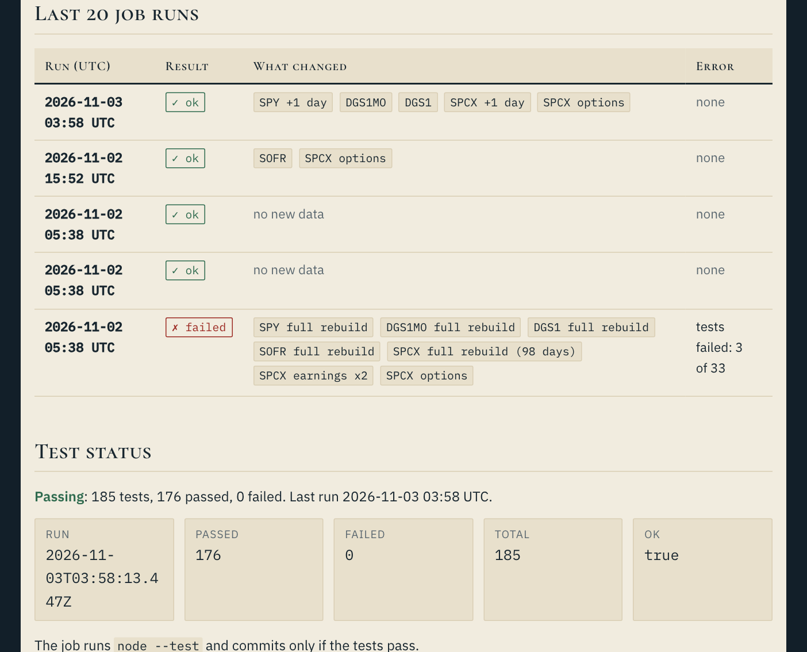
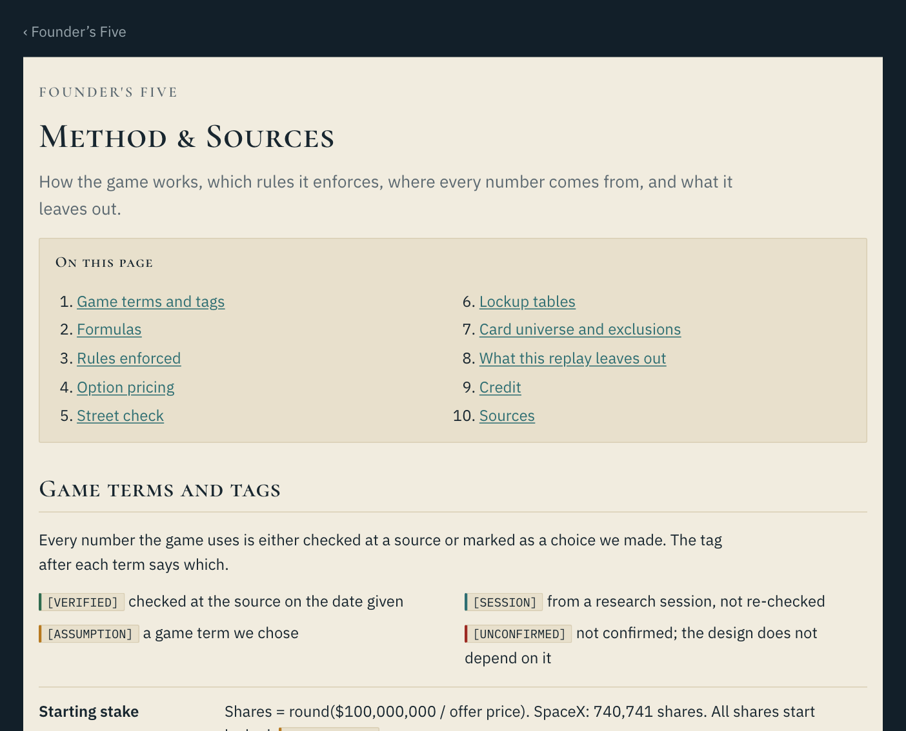

The title screen. The strip under the buttons shows the data-as-of date: prices through {{asOfLong}} close, updated nightly, SpaceX card at {{spcxDays}} trading days.
Founder’s Five is a browser game in which you hold $100 million of one real stock on its IPO day and cannot sell it yet. You work through the real lockup release dates, trading windows and SEC rules using only a private bank’s tools: staged sales, a 10b5-1 plan, a zero-cost collar, a credit line against the shares and an index fund. Each run is scored on Sharpe ratio, max drawdown, after-tax IRR and after-tax family wealth, against three rival bots that play the same card.
Each requirement from the prompt, what was built to meet it, and where you can see it.
| Requirement | How Founder’s Five meets it | Where you see it |
|---|---|---|
| Build a finance app using Claude or ChatGPT | Built end to end with Claude Code. Claude also read the prospectus lockup terms and wrote the anonymized headlines, and each of those outputs passed a machine check. The finished game calls no AI model. | “How AI was used” page; PDF page 4 |
| Web browser interface | A static site on GitHub Pages: plain HTML, JavaScript and JSON, nothing to install. Playable on a phone in portrait. | The link on page 1 |
| Project type: trading game | One stock plus its tools (staged sales, 10b5-1 plan, zero-cost collar, protective put, credit line, exchange fund, index fund). A fixed $100M stake over five years, judged on Sharpe ratio, max drawdown and after-tax IRR, the measures the prompt names. Three rival bots play the same card. | Scoreboard; PDF page 5 |
| Imports historical data | Daily prices for the SpaceX card and {{blindShipped}} blind IPO cards, the S&P 500 fund (SPY), three Treasury and SOFR rate series, 8-K earnings dates and each prospectus lockup, all committed as JSON. | Data page; Method page |
| Updates when new data arrive | A GitHub Action runs on weekdays at 23:30 UTC. It appends prices, rates, SpaceX option data and new SEC filings, runs the tests, and commits only if they pass. The SpaceX card grows by one day each trading day. | Data-as-of strip on every screen; update log on the Data page |
| No login, no email request | Public site with no accounts and no email prompt. It loads fonts and a chart library from public CDNs and nothing else. | Open the link in a private window on a phone |
| PDF in Canvas with embedded links | This 5-page PDF. The live site, the Method and Data pages, the Actions history and the repository are clickable. | This file |
| Accuracy (“no partial credit”) | {{tests}} tests pass under node --test, including 12 numbered golden tests. A spreadsheet with live formulas re-derives 6 of them. Every lockup was read twice by separate agents and reconciled against the prospectus text. Every enforced rule links its source. | Method page; test badge on the Data page; tests/golden.xlsx |
| On time | Due Tuesday, November 3 at 1 pm. The PDF and the live site go in together. | Canvas submission |



The browser never calls a data source. A scheduled job fetches everything, tests it and commits plain JSON. The site only reads that JSON, so a visitor needs no key, no login and no server of ours.
Prices, rates, option quotes and filing dates come from free public endpoints with no key. SEC requests carry a contact user agent and stay under ten a second.
The job runs the full test suite ({{tests}} tests now) before it commits. If a source fails or a test fails, nothing new goes live and the error is written to the update log.
Every screen carries the data-as-of date. The copy says “nightly”, never an exact time, because GitHub’s scheduler can run late.
.github/workflows and the data scripts in scripts.The screenshot shows the update log as it stood when this PDF was built, {{built}}: data as of {{asOfLong}}, SpaceX card at {{spcxDays}} trading days.

The Data page: the update log and the test status.
All AI work ran inside the build sessions. Counts come from the files named under each heading.
Claude Code ran the build from a written spec. One orchestrating session split the work into waves and gave pieces to parallel subagents: the data job, the card universe, the engine, the screens, the pages, the art and the tests. A progress file records each task, its owner, its check and its result, and every overnight decision is logged with its reason and what it costs if wrong.
The SpaceX prospectus and {{blindRead}} blind-card prospectuses ({{readTotal}} filings) were each read by two agents with no shared context. Each wrote the tranches with a quoted sentence and a page number. A reconciler then compared the two reads and settled every difference against the filing text. Code checks that percentages add to 100 per group and that dates resolve. The two reads differed on 4 items: two date conventions on SpaceX, one release group on Card 4 and one failed price test on Card 6. Each was settled by quoting the filing. In two further cases the reconciler overruled a reading on a more specific source: SpaceX day 180 stays December 8, and one unshipped blind card’s lockup end follows the company’s own 8-K. All {{blindRead}} blind cards reconciled and {{blindShipped}} shipped.
Each blind card shows 8 headlines taken from its 8 largest one-day moves. Claude wrote them from the 8-K text with no company, product, person, place or ticker. A name filter built from the company name, ticker and the executive and product names in the prospectus rejects any line that contains a banned term. A second agent was then asked to name the company, over 4 identification rounds. Four of the {{blindShipped}} shipped cards ended up unidentified. An expert reader can still name Card 2 (85% confidence) and weakly Card 4 (60%); both are logged, and a swap candidate is ready.
Each blind card ends with a short paragraph about what happened. A script checks that every number in it appears in the card’s own data, or is a rounding of a value derived from it.
Two separate agents tried to break the build: a banker critic on the rules (9 findings) and a quant critic on the numbers (8). The quant critic found the core clean: net worth recomputed from its parts, Sharpe, drawdown and IRR recomputed for every bot, card and seat, no look-ahead, identical results over 39 repeat runs. What they caught, now fixed or logged as stated game terms:
{{tests}} tests pass under node --test. Twelve are numbered golden tests with known answers: Black-Scholes and the zero-cost call, put-call parity, XIRR, Sharpe, max drawdown, the SpaceX ladder, both cooling-off rules, the loan call, tax, the trading window, determinism and daily invariants. Claude also built tests/golden.xlsx, which re-derives six of them with live Excel formulas; its summary sheet compares each cell with the JavaScript value. The nightly job runs the suite and commits only if it passes. The Method page shows each tranche’s human sign-off status next to its prospectus quote and page.

The Method page carries every formula verbatim and a source for every rule.
| Rule | What the game does | Source |
|---|---|---|
| Lockup | Shares release only on resolved tranche dates; locked shares cannot be sold, hedged or pledged. | Each card’s 424B4, quoted with page; SpaceX 424B4 |
| Trading window | Closed from 30 days before an earnings release until the second trading day after it. | Game term; real 8-K Item 2.02 dates |
| 10b5-1 cooling-off | Engineer 30 days. Founder: the later of 90 days or 2 business days after the quarter’s report, at most 120. | 17 CFR 240.10b5-1(c)(1)(ii)(B) |
| No hedge under a plan; one plan | No new collar or put while a plan is adopted; a second plan is blocked. | 240.10b5-1(c)(1)(i)(C) and (c)(1)(ii)(D) |
| Rule 144 (founder) | Volume cap per rolling 3 months; no sales before IPO day 91. | 17 CFR 230.144(c), (d), (e) |
| Single-stock lending | 25% advance, 35% call, deadline on the third trading day, then a taxable forced sale. | Game terms; FINRA |
| Collar band | Put at most 90%, call at least 110% of the price. | Game term; IRC 1259 has no safe harbor |
| Exchange fund | Seven-year hold. | IRC 704, 737 (secondary sources) |
Pricing: Black-Scholes with the 1-year Treasury rate. SpaceX’s Street check compares the model’s zero-cost cap with listed options. Elsewhere volatility is 60-day realized volatility times 1.10, floored at 30%, with a 1.5 point skew. Each Method-page term is tagged verified, session, assumption or unconfirmed.